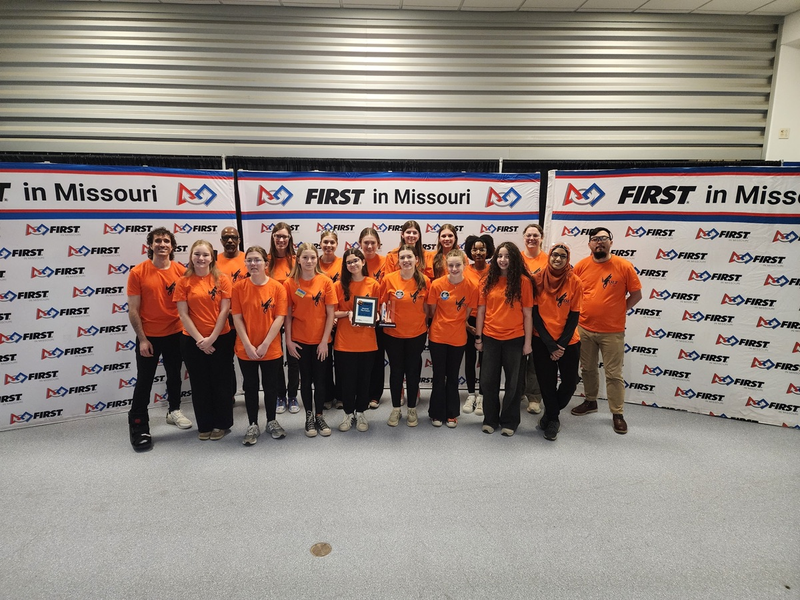
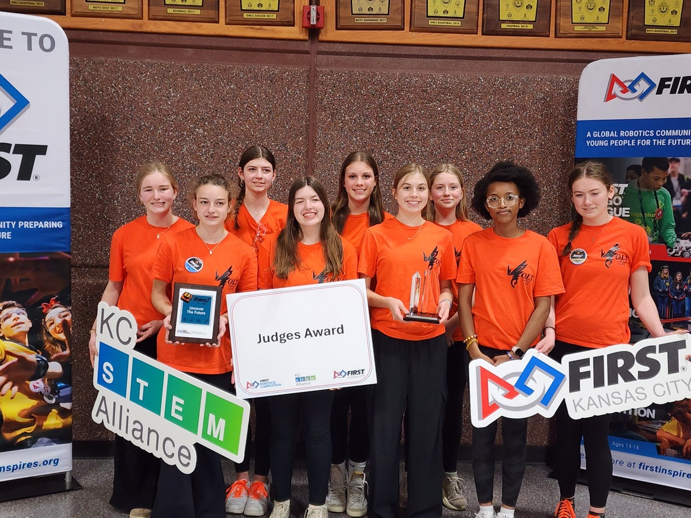

An all-girls rookie FIRST Robotics Competition team, grown from two championship FTC programs — giving girls a complete pathway from the library to the competition field and into STEM careers.
VOLT, FRC Team 11195, grew from the combined work of two all-girls FTC programs — Polytechnic Puzzle Pieces (#16751) and Gear Girls (#23469). Those students, mentors, outreach programs, and community partnerships now move forward as a single team with a shared purpose: giving girls a complete pathway through FIRST and into STEM leadership.
Our pipeline ran all the way through FTC, but it stopped there. With the support of a NASA grant, VOLT completes that pathway — so a girl who drives a robot at the public library now has an FRC team waiting for her at the end of the road.

In O'Fallon, a lot of girls first meet robotics at the public library or a Girl Scout badge activity. From that first moment driving a demo robot, we give them somewhere to go next — every step of the way.
Mentors guide, but students run things. Our roster is organized into student-led subteams across every discipline of an FRC team — Robot Build and Business.
Design/CAD in Onshape, fabrication, assembly, and maintenance — building a reliable robot from a proven starter-bot foundation.
Wiring, controls, and instrumentation, learned alongside licensed IBEW electricians and industry mentors.
Robot control systems and programming, mentored by professional software developers from Boeing and the U.S. Air Force.
Outreach, documentation, scouting, safety, media, and project management — the engine behind our community impact.

In our rookie FRC season, VOLT won the Judges' Award at the Greater Kansas City Regional and the Rookie All Star Award at the St. Louis Regional. For a first-year team, those results reflect something bigger than the robot — years of outreach, student leadership, and community investment that came into FRC with us.
See All AwardsThe FIRST Robotics Competition is the highest level of the FIRST program, where high-school teams design, build, and drive industrial-scale robots in a new game each season.
VOLT is an all-girls team built from students across seven schools in the O'Fallon, IL area. Girls come to us through our FLL and FTC pipeline, or directly — prior experience is not required.
No — we're a community-based team affiliated with Girl Scouts of Southern Illinois, sustained by grants, sponsors, and community partners.
We welcome sponsors, mentors, and community partners. Visit our Partners page or get in touch.